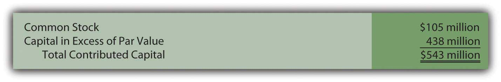
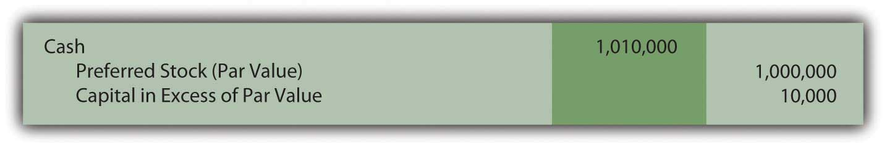
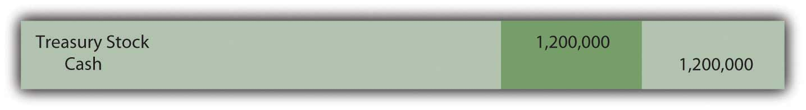
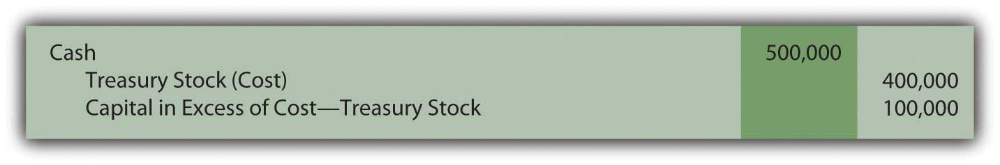
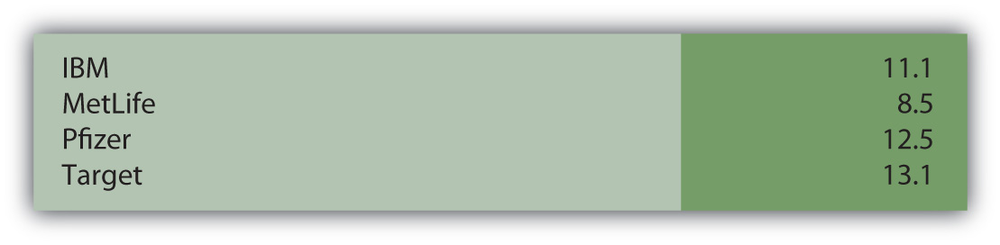
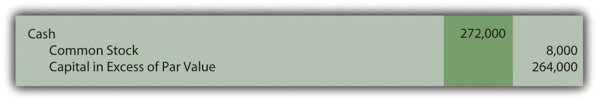
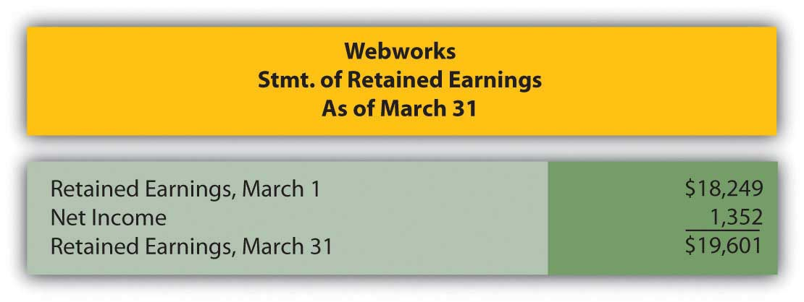

Joe introduces Chapter 16 "In a Set of Financial Statements, What Information Is Conveyed about Shareholders’ Equity?" and speaks about the course in general.
At the end of this section, students should be able to meet the following objectives:
Question: In the United States, businesses and other organizations must operate under one of three legal forms.In recent decades, a number of variations of these legal forms have been allowed, each with its own particular characteristics. For example, limited liability companies (LLCs) and limited liability partnerships (LLPs) are hybrids that exhibit characteristics of both partnerships and corporations and are permitted to exist in certain states.A proprietorshipA business created, owned, and operated by a single individual; business is not legally separate from its owner through incorporation; it is also referred to as a sole proprietorship. is created by a single owner whereas a partnershipA business created, owned, and operated by more than one individual; business is not legally separate from its owners through incorporation. is started and owned by two or more parties. Establishing ownership is often quite informal. In contrast, a corporationAn organization that has been formally recognized by the state government as a legal entity so that it can sell ownership shares to raise money for capital expenditures and operations; business is legally separate from its owners through incorporation. comes into existence by means of a formal request made to the state government. The number of owners is usually not relevant in creating a corporation. Because corporations are the dominant legal form (at least monetarily) in the world, they have been the primary emphasis throughout this text. Numerically, more proprietorships and partnerships do exist but virtually every business of any size operates as a corporation. How is a corporation established, and what characteristics make it attractive?
Answer: Incorporation of an entity is only required in one state regardless of its size. To start this process, the original owners submit articles of incorporation to that government.A list of the typical contents of the articles of incorporation can be found at “Articles of Incorporation,” http://en.wikipedia.org/wiki/Articles_of_Incorporation. Rules, regulations, and requirements vary significantly so that these procedures are more complicated in some states than others. For example, many well-known businesses are incorporated in Delaware because of the ease of the laws in that state.
After all documents have been filed and all other requirements met, the state government issues a corporate charter that recognizes the organization as a legal entity separate from its ownership. This separation of the ownership is what differentiates a corporation from a partnership or proprietorship. Following incorporation in one state, the entity is then allowed to operate in any other state.
As mentioned in a previous chapter, ownership of a corporation is divided into shares of stock that are issued to raise funds. In general, these shares are referred to as capital stock and the owners as shareholders or stockholders. For example, at December 31, 2008, the stockholders of Raytheon Company held approximately 400 million of these shares. Unless restricted contractually, capital stock can be exchanged freely. Once issued by a corporation, shares can be resold dozens or even hundreds of times. Operations are usually unaffected by these ownership changes. Information about the current market price of most stocks as well as a considerable amount of other information can be found at http://www.google.com/finance and http://www.yahoo.com/finance.
Thus, a corporation is able to continue in existence even after owners die or decide to switch to other investments. In partnerships and proprietorships, capital stock does not exist. Consequently, the transfer of an ownership interest is much more complicated. Partnerships and proprietorships often operate only for as long as the original owners are willing and able to continue being actively involved.
As a result of the legal separation of ownership and business, shareholders have no personal liability for the debts of the corporation.When money is loaned to a corporation, especially one that is either new or small, the lender might require the owners to personally guarantee the debt. However, unless such a guarantee is made, the debt is that of the corporation and not the members of the ownership. An owner of a share of Raytheon is not responsible for any of the liabilities of that company. The maximum loss a shareholder can suffer is the amount contributed to the business (or paid to a previous owner) in acquiring capital stock.
In contrast, the owners of a partnership or proprietorship are personally liable for all business debts. No separation exists between the business and the ownership. A partner or proprietor could invest $1,000 but wind up losing almost any amount if funds are borrowed by the business that cannot be repaid. Such potential losses are especially worrisome in a partnership where each partner serves as an agent for the entire organization. Under the concept of mutual agencyA characteristic of a partnership whereby any partner can obligate other partners to an agreement without their direct consent; does not have a parallel in corporate ownership., any partner can obligate the partnership and, if the debt is not paid when due, the creditor can seek redress from any other partner. The limited liabilityA legal characteristic associated with the ownership of a corporation whereby the maximum amount that can be lost is the owner’s capital investment; an attribute of the capital stock of a corporation that does not similarly exist with proprietorships or partnerships. offered by a corporation is one of the primary reasons for its popularity. Investors have a strong preference for being able to quantify the amount of money at risk.
Question: Ownership shares of most corporations can be transferred. Thus, the life of a corporation can extend indefinitely. Caswell-Massey Co., a “purveyor of luxury personal care products,” was incorporated in 1752 in Rhode Island and continues to do business today.
Investors are able to move into and out of these investments quickly. In addition, the availability of limited liability restricts potential losses to the amounts invested. These characteristics help explain the immense popularity of the corporate form. However, a significant number of partnerships and proprietorships still come into existence each year. If no problems were possible, incorporation would be the only practical option. What disadvantages are associated with corporations?
Answer: Incorporation is often a time consuming and costly legal process. However, in most states, proprietorships and partnerships can be created informally with little effort. Owners of many small businesses feel that the creation of a corporation is more trouble than it is worth. Furthermore, corporations are often more susceptible to a plethora of government regulations.
The most obvious problem associated with corporations is the double taxationA negative feature associated with the corporate form of organization; corporate earnings are taxed first when earned and then taxed again when distributed to owners in the form of dividends. of income. As noted, proprietorships and partnerships are not deemed to be entities separate from their owners. Therefore, income is taxed only one time. Owners pay that tax when the income is earned by their business. For a proprietorship, Schedule C is an income statement attached to the owner’s individual Form 1040 income tax return to include the business’s profit or loss. A partnership does file its own return on Form 1065 but that is merely for information purposes; no income tax is paid. Instead, the various business revenues and expenses are assigned to the partners for inclusion on their individual tax returns. Any eventual conveyance of this income from business to owner does not create a second tax.
In contrast, corporations are separate legal entities that pay their own taxes by filing Form 1120 to report all taxable income that has been earned.Tax rules do allow smaller corporations to file their income taxes as S corporations if certain guidelines are met. S corporations follow virtually the same tax rules as partnerships so that income is only taxed one time when initially earned. However, when any dividends are eventually distributed from those earnings to the stockholders, this transfer is also viewed as taxable income to the owner. Income is taxed once when earned by the corporation and again when distributed to the owners. Critics have long argued that the collection of the dividend is not a new earning process. To mitigate the impact of this second tax, the United States Congress has established a maximum tax rate of 15 percent on much of the dividend income collected by individuals. This rate is considerably lower than that applied to most other types of income.
To illustrate, assume that income tax rates are 30 percent except for the 15 percent tax on dividends. A proprietorship (or partnership) earns a profit of $100. In this type business, the $100 is only taxable to the owner or owners when earned. Payment of the resulting $30 income tax ($100 × 30 percent) leaves $70. This is the remaining disposal income. Any distribution of this money has no impact on taxes.
If a corporation reports this same amount of income, a tax of $30 is assessed to the business so that only $70 remains. This income can then be conveyed as a dividend. However, another tax must be paid, this time by the stockholder. The second income tax is $10.50 ($70 × 15 percent). The owner is left with only $59.50 ($70.00 less $10.50) in disposal income. The increase in the amount taken by the government ($40.50 versus $30.00 on $100 of taxable income) is significant enough to reduce the inclination of many owners to incorporate their businesses.
Link to multiple-choice question for practice purposes: http://www.quia.com/quiz/2092983.html
Businesses can exist as corporations, partnerships, or sole proprietorships. A corporation differs from the other two forms because it is an entity legally separate from its ownership. Thus, the liability of owners is limited to the amount of their investments. Corporations are formed according to individual state laws. Shares of the ownership of a corporation (capital stock) are issued to raise money for operations and growth. In many cases, these shares can be readily sold by one owner to the next, often on a stock exchange. The ability to buy and sell capital shares enables a corporation to raise funds and have a continuous life. Disadvantages associated with the corporate form include the cost and difficulty of incorporation and government regulation. The double taxation of corporate income (which is not found with partnerships and sole proprietorships) is often the biggest drawback to incorporation.
At the end of this section, students should be able to meet the following objectives:
Question: Several accounts frequently appear in the shareholders’ equity section of a balance sheet reported by a corporation. Each has its own particular meaning. For example, as of January 3, 2009, Kellogg Company reported the following information (all numbers in millions).
Figure 16.1 Shareholders’ Equity—Kellogg Company as of January 3, 2009

Some of these terms have been examined previously, others have not. For example, “retained earnings” was described in early chapters as the increase in net assets generated by net income over the life of a company less any amounts distributed as dividends during that same period. In Chapter 12 "In a Set of Financial Statements, What Information Is Conveyed about Equity Investments?", “accumulated other comprehensive income” was discussed because it was utilized to record changes in the fair value of available-for-sale securities. Gains and losses in the worth of these investments were not included within net income. Rather, they were reported under this heading within stockholders’ equity and subsequently used in computing comprehensive income.
Common stockA type of capital stock that is issued by every corporation; it provides rights to the owner that are specified by the laws of the state in which the organization is incorporated. has also been mentioned in connection with the capital contributed to a company by its owners. However, Kellogg communicates additional information about its common stock such as the number of authorized and issued shares as well as its par value. What is common stock? That seems the logical first step in analyzing the information provided by a company about its capital shares.
Answer: Common stock represents the basic ownership of a corporation. One survey in 2007 found that common stock is the only type of capital stock issued by approximately 90 percent of corporations.Yury Iofe, senior editor, and Matthew C. Calderisi, CPA, managing editor, Accounting Trends & Techniques, 62nd edition (New York: American Institute of Certified Public Accountants, 2008), 289. Obtaining ownership of a company’s common stock provides several distinct rights. However, the specific rights are set by the laws of the state of incorporation and do vary a bit from state to state.Although the Kellogg Company has its headquarters in Battle Creek, Michigan, the company is incorporated in the state of Delaware. Thus, the laws of Delaware set the rights of the common stock shares for this company.
Question: “Authorized,” “issued,” and “par value” are terms mentioned by the Kellogg Company in describing its ownership shares. What terms are associated with capital stock and what do they mean?
Answer:
AuthorizedThe maximum number of shares that a corporation can issue based on the articles of incorporation approved by the state government at the time of incorporation.. In applying to the state government as part of the initial incorporation process, company officials indicate the maximum number of capital shares they want to be able to issue. This approved limit is the authorized total. Corporations often set this figure so high that they never have to worry about reaching it. However, states do allow the authorization to be raised if necessary.
IssuedThe number of shares of a corporation that have been sold or conveyed to owners.. The number of issued shares is simply the quantity that has been sold or otherwise conveyed to owners. Kellogg reports that one billion shares of common stock were authorized by the state of Delaware but only about 419 million have actually been issued to stockholders as of the balance sheet date. The remaining unissued shares are still available if the company needs to raise money by selling additional capital stock.
OutstandingThe number of shares of a corporation that are currently in the hands of the public; it is the shares that have been issued since operations first began less any treasury shares repurchased and still held by the corporation.. The total amount of stock currently in the hands of the public is referred to as the shares “outstanding.” Shares are sometimes bought back from stockholders and recorded as treasury stock. Thus, originally issued shares are not always still outstanding. According to the information provided, Kellogg has acquired nearly thirty-seven million treasury shares. Although not mentioned directly, Kellogg now has only 382 million shares of common stock outstanding in the hands of the stockholders (419 million issued less 37 million treasury shares). This number is important because it serves as the basis for dividend payments as well as any votes taken of the stockholders.
Par valueA number printed on a stock certificate to indicate the minimum amount of money owners must legally leave in the business; generally set at a low amount to avoid legal complications.. The most mysterious term on a set of financial statements might well be “par value.” The requirement for a par value to be set was created decades ago in connection with the issuance of stock. It is printed on the face of a stock certificate and indicates (again depending on state law) the minimum amount of money that owners must legally leave in the business. By requiring a par value to be specified on the stock certificate, state lawmakers hoped to prevent a corporation from borrowing money that was then distributed to a few owners before bankruptcy was declared.
Traditionally, companies have gotten around this limitation by setting the par value at an extremely low number.Many other laws have been passed over the years that have been much more effective at protecting both creditors and stockholders. For example, Kellogg discloses a par value of $0.25 for its common stock, which is actually quite high. Many companies report par values that fall between a penny and a nickel. The balance sheet for Barnes & Noble shows a par value for its common stock of one-tenth of a penny.
Link to multiple-choice question for practice purposes: http://www.quia.com/quiz/2093025.html
Question: Over the years, one residual effect from the requirement to include a par value on stock certificates has remained. This figure is still used in reporting the issuance of capital stock. Thus, if Kellogg sells one share for cash of $46.00 (the approximate value on the New York Stock Exchange during the summer of 2009), the common stock account is increased but only by the $0.25 par value. Kellogg receives $46.00 but the par value is only $0.25. How can this journal entry balance? How does a company report the issuance of a share of common stock for more than par value?
Answer: A potential stockholder contributes assets to a company in order to obtain an ownership interest. In accounting, this conveyance is not viewed as an exchange. It is fundamentally different from selling inventory or a piece of land to an outside party. Instead, the contribution of monetary capital is an expansion of both the company and its ownership. As a result, no gain, loss, or other income effect is ever reported by an organization as a result of transactions occurring in its own stock. An investor is merely transferring assets to a corporation to be allowed to join its ownership.
Consequently, a second shareholders’ equity balance is created to report the amount received above par value. Kellogg uses the title “capital in excess of par value” but a number of other terms are frequently encountered such as “additional paid-in capital.”
Kellogg records the issuance of a share of $0.25 par value common stock for $46 in cash as follows.A few states allow companies to issue stock without a par value. In that situation, the entire amount received is entered in the common stock account.
Figure 16.2 Issuance of a Share of Common Stock for Cash
On the balance sheet, within the stockholders’ equity section, the amount that owners put into a corporation when they originally bought stock is the summation of the common stock and capital in excess of par value accounts. This total reflects the assets conveyed to the business in exchange for capital stock. For Kellogg, that figure is $543 million, the amount received from its owners since operations first began.
Figure 16.3 Kellogg Common Stock and Capital in Excess of Par ValueAs mentioned in the previous chapter, the sales of capital stock that occur on the New York Stock Exchange or other stock markets are between investors and have no direct effect on the company. Those transactions simply create a change in ownership.
Link to multiple-choice question for practice purposes: http://www.quia.com/quiz/2093026.html
Question: Common stock is sometimes issued in exchange for property or personal services rather than for cash. Such contributions are especially prevalent when a small corporation is first getting started. Potential owners may hold land, buildings, or other assets needed by the business. Or, an accountant, attorney, or the like might be willing to provide expert services and take payment in stock. This arrangement can be especially helpful if the business is attempting to conserve cash. What recording is made if capital stock is issued for a service or an asset other than cash?
Answer: The issuance of stock for an asset or service is not technically a tradeAs mentioned earlier, the issuance of capital stock is not viewed as a trade by the corporation because it merely increases the number of capital shares outstanding. It is an expansion of both the company and its ownership. That is different from, for example, giving up an asset such as a truck in exchange for a computer or some other type of property. but the accounting rules are the same. The asset or the service received by the corporation is recorded at the fair value of the capital stock surrendered. That is the equivalent of historical cost. It is a measure of the sacrifice made by the business to get the asset or service. However, if the fair value of the shares of stock is not available (which is often the case for new and smaller corporations), the fair value of the property or services received becomes the basis for reporting.
To illustrate, assume that a potential investor is willing to convey land with a fair value of $125,000 to the Maine Company in exchange for an ownership interest. During negotiations, officials for Maine offer to issue ten thousand shares of $1 par value common stock for this property. The shares are currently selling on a stock exchange for $12 each. The investor decides to accept this proposal rather than go to the trouble of trying to sell the land.
The “sacrifice” made by the Maine Company to acquire this land is $120,000 ($12 per share × 10,000 shares). Those shares could have been sold on the stock exchange to raise that much money. Instead, Maine issues them directly in exchange for the land and records the transaction as follows.
Figure 16.4 Issue Ten Thousand Shares of Common Stock Worth $12 per Share for Land
If this stock was not selling on a stock exchange, fair value might not be apparent. In that situation, the Maine Company should recognize the land at its own fair value of $125,000 with an accompanying $5,000 increase in the capital in excess of par value account.
Common stock forms the basic ownership units of most corporations. The rights of the holders of common stock shares are normally set by state law but include voting for a board of directors to oversee current operations and future plans. Financial statements often indicate the number of authorized shares (the maximum allowed), issued shares (the number that have been sold), and outstanding shares (those currently in the hands of owners). Common stock usually has a par value although the meaning of this number has faded in importance over the decades. Upon issuance, common stock is recorded at par value with any amount received above that figure reported in an account such as capital in excess of par value. If issued for an asset or service instead of cash, the recording is based on the fair value of the shares given up. However, if that value is not available, the fair value of the asset or service is used.
At the end of this section, students should be able to meet the following objectives:
Question: Some corporations also issue a second type of capital stock referred to as preferred stock. Probably about 10–15 percent of companies in the United States have preferred stock outstanding but the practice is more prevalent in some industries. How is preferred stock different from common stock?
Answer: Preferred stock is another version of capital stock where the rights of those owners are set by the contractual terms of the stock certificate rather than state law. In effect, common stockholders are voluntarily surrendering one or more of their rights in hopes of enticing additional investors to contribute money to the corporation. For common stockholders, preferred stock is often another possible method of achieving financial leverage in the same manner as using money raised from bonds and notes.
The term “preferred stock” comes from the preference that is conveyed to these owners. They are being allowed to step in front of common stockholders when the specified rights are applied. A wide variety of benefits can be assigned to the holders of preferred shares, including additional voting rights, assured representation on the board of directors, and the right to residual assets if the company ever liquidates.
By far the most typical preference is to cash dividends. As mentioned earlier in this chapter, all common stockholders are entitled to share proportionally in any dividend distributions. However, if a corporation issues preferred stock with a stipulated dividend, that amount must be paid before any money is conveyed to the owners of common stock. No dividend is ever guaranteed, not even one on preferred shares. A dividend is only legally required if declared by the board of directors. But, if declared, the preferred stock dividend comes before any common stock dividend.
Common stock is often referred to as a residual ownership because these shareholders are entitled to all that remains after other claims have been settled including those of preferred stock.
The issuance of preferred stock is accounted for in the same way as common stock. Par value, though, often serves as the basis for specified dividend payments. Thus, the par value listed for a preferred share frequently approximates fair value. To illustrate, assume that a corporation issues ten thousand shares of preferred stock. A $100 per share par value is printed on each stock certificate. If the annual dividend is listed as 4 percent, $4 per year ($100 par value × 4 percent) must be paid on preferred stock before any distribution is made on the common stock.
If ten thousand shares of this preferred stock are each issued for $101 in cash ($1,010,000 in total), the company records the following journal entry.
Figure 16.5 Issue Ten Thousand Shares of $100 Par Value Preferred Stock for $101 per Share
Companies often establish two separate “capital in excess of par value” accounts—one for common stock and one for preferred stock. They are then frequently combined in reporting the balances within stockholders’ equity.
Link to multiple-choice question for practice purposes: http://www.quia.com/quiz/2093027.html
Question: An account called treasury stockIssued shares of a corporation’s own stock that have been reacquired; balance is shown within stockholders’ equity section of the balance sheet as a negative amount unless the shares are retired (removed from existence). is often found near the bottom of the shareholders’ equity section of the balance sheet. Treasury stock represents issued shares of a corporation’s own stock that have been reacquired. For example, the December 31, 2008, balance sheet for Viacom Inc. reports a negative balance of nearly $6 billion identified as treasury stock.
A 2004 story in the Wall Street Journal indicated that Viacom had been buying and selling its own stock for a number of years: “The $8 billion buyback program would enable the company to repurchase as much as 13 percent of its shares outstanding. The buyback follows a $3 billion stock-purchase program announced in 2002, under which 40.7 million shares were purchased.”Joe Flint, “Viacom Plans Stock Buy Back, Swings to Loss on Blockbuster,” The Wall Street Journal, October 29, 2004, B-2.
Why does a company voluntarily give billions of dollars back to stockholders in order to repurchase its own stock? That is a huge amount of money leaving the company. Why not invest these funds in inventory, buildings, investments, research and development, and the like? Why does a corporation buy back its own shares as treasury stock?
Answer: Numerous possible reasons exist to justify spending money to reacquire an entity’s own stock. Several of these strategies are rather complicated and a more appropriate topic for an upper-level finance course. However, an overview of a few of these should be helpful in understanding the rationale for such transactions.
Question: To illustrate the financial reporting of treasury stock, assume that the Chauncey Company has issued ten million shares of its $1 par value common stock at an average price of $3.50 per share. The company now reacquires three hundred thousand of these shares for $4 each. How is the acquisition of treasury stock reported?
Answer: Under U.S. GAAP, several methods are allowed for reporting the purchase of treasury stock. Most companies appear to use the cost method because of its simplicity. The acquisition of these shares by Chauncey is recorded at the $1.2 million (three hundred thousand shares at $4 each) that was paid.
Figure 16.6 Purchase of Three Hundred Thousand Shares of Treasury Stock at a Cost of $4 Each
Because the cost of treasury stock represents assets that have left the business, this account balance is shown within stockholders’ equity as a negative amount, reflecting a decrease in net assets instead of an increase.
Except for possible legal distinctions, treasury stock is the equivalent of unissued stock. It does not receive dividendsDistributions made by a corporation to its shareholders as a reward when income has been earned; shareholders often receive favorable tax treatment when cash dividends are collected. and has no voting privileges.
Question: Treasury shares can be held forever or eventually sold at prices that might vary greatly from original cost. If sold for more, is a gain recognized? If sold for less, is a loss reported? What is the impact on a corporation’s financial statements if treasury stock is reissued? To illustrate, assume that Chauncey Company subsequently sells one hundred thousand shares of its treasury stock for $5.00 each. That is $1.00 more than these shares cost to reacquire. Is this excess reported as a gain within net income?
Answer: As discussed previously, transactions in a corporation’s own stock are considered expansions and contractions of the ownership and never impact reported net income. The buying and selling of capital stock are viewed as fundamentally different from the buying and selling of assets. Therefore, this reissuance is recorded by Chauncey through the following journal entry.
Figure 16.7 Sale of One Hundred Thousand Shares of Treasury Stock Costing $4 Each for $5 per Share
The “capital in excess of cost-treasury stock” is the same type of account as the “capital in excess of par value” that was recorded in connection with the issuance of both common and preferred stocks. Within stockholders’ equity, these accounts can be grouped or reported separately.
Question: Assume that Chauncey later sells another one hundred thousand of the treasury shares, but this time for only $2.60 each. The proceeds in this transaction are below the acquisition cost of $4 per share. What recording is made if treasury stock is sold at the equivalent of a loss?
Answer: Interestingly, the selling of treasury stock below cost is a transaction not well covered in U.S. GAAP. Authoritative rules fail to provide a definitive rule for reporting this reduction except that stockholders’ equity should be decreased with no direct impact recorded in net income.
The most common approach seems to be to first remove any capital in excess of cost recorded by the sale of earlier shares of treasury stock at above cost. If that balance is not large enough to absorb the entire reduction, a decrease is made in retained earnings as shown below. The $100,000 balance in capital in excess of cost-treasury stock was created in the previous journal entry.
Figure 16.8 Sale of One Hundred Thousand Shares of Treasury Stock Costing $4 Each for $2.60 per Share

One outcome of this handling should be noted. In the early chapters of this textbook, “retained earnings” was defined as all income reported over the life of a business less all dividend distributions to the owners. Apparently, this definition is not absolutely correct in all possible cases. In the above journal entry, retained earnings are also reduced as a result of a stock transaction where a loss occurred that could not otherwise be reported.
Link to multiple-choice question for practice purposes: http://www.quia.com/quiz/2093028.html
Link to multiple-choice question for practice purposes: http://www.quia.com/quiz/2093007.html
A corporation can issue preferred stock as well as common stock. Preferred shares are given specific rights that come before those of common stockholders. Usually, these rights involve the distribution of dividends. A set payment amount is often required before common stockholders receive any dividend. Subsequently, capital stock shares can be bought back from investors for a number of reasons. If so, they are known as treasury stock. In acquiring these shares, money flows out of the company so the account is reported as a negative balance within stockholders’ equity. If resold, the treasury stock account is reduced and capital in excess of cost is recognized if an amount above cost is received. However, if resold at a loss, any previous capital in excess of cost balance is removed followed by a possible reduction in retained earnings.
At the end of this section, students should be able to meet the following objectives:
Question: As stated in Chapter 1 "Why Is Financial Accounting Important?", a vast majority of investors purchase capital stock for only two reasons: price appreciation and dividends. Dividends and long-term capital gains (gains on the sale of certain investments that have been held for over a year) are especially appealing to individual investors because they are taxed at a lower rate than most other types of income.
Dividends are usually paid in cash and represent the profits of a business being passed along to the owners. Because the corporation is effectively giving away its assets, dividends require formal approval by the board of directors—known as a dividend declaration. The board considers current cash balances as well as the projected needs of the business before deciding on the amount, if any, of a dividend payment. How does a corporation report the declaration and distribution of a cash dividend?
Answer: Dividends provide a meaningful signal to investors about the financial health of a business. Some corporations even boast about having paid a constant or rising annual dividend for many years. Unfortunately, one result of recent economic times has been that a number of businesses have been forced to reduce or even eliminate dividend distributions. Such decisions typically lead to a drop in the market price of a corporation’s stock because of the negative implications.
Other businesses stress rapid growth and rarely, if ever, pay a cash dividend. The board of directors prefers that all profits remain in the business to stimulate future growth. For example, Netflix Inc. reported net income for 2008 of over $83 million but paid no dividend.
Chronologically, accounting for dividends involves several dates with approximately two to five weeks passing between each:
To illustrate, assume that the Hurley Corporation has one million shares of authorized common stock. To date, three hundred thousand of these shares have been issued but twenty thousand shares were recently bought back as treasury stock. Thus, 280,000 shares are presently outstanding, in the hands of investors. Hurley earned a reported net income of $780,000 in the current year. After some deliberations, the board of directors has decided to distribute a $1.00 cash dividend on each share of common stock.
The day on which the Hurley board of directors formally decides on the payment of this dividend is known as the date of declaration. Legally, this action creates a liability for the company that must be reported in the financial statements. Only the owners of the 280,000 shares that are outstanding will receive this distribution.
Figure 16.9 $1.00 per Share Dividend Declared by Board of Directors

As discussed previously, dividend distributions reduce the amount reported as retained earnings but have no impact on reported net income.
When the dividend is declared by the board, the date of record is also set. All shareholders who own the stock on that day qualify for receipt of the dividend. The ex-dividend date is the first day on which an investor is not entitled to the dividend. Because receipt of the dividend has been lost, the market price of the stock typically drops by approximately the amount of the dividend on the ex-dividend date although myriad other market factors always influence the movement of stock prices.
No journal entry is recorded by the corporation on either the date of record or the ex-dividend date because they do not relate to any event or transaction. Those dates simply allow Hurley to identify the owners to whom the dividend will be paid.
On the date of payment, the corporation mails checks to the appropriate recipients, an event recorded as follows.
Figure 16.10 Payment of $1.00 per Share Cash Dividend

Question: Assume that Wington Company issues a share of $100 par value preferred stock to an investor on January 1, Year One. The preferred stock certificate discloses an annual dividend rate of 8 percent. Thus, dividend payment is $8 each year ($100 × 8 percent). At the end of Year One, Wington faces a cash shortage and is unable to pay this dividend. Have the owners of the preferred shares lost the right to the Year One dividend? Must a corporation report a liability if a preferred stock dividend is not paid at the appointed time?
Answer: Preferred stock dividends are often identified on the stock certificate as “cumulativeFeature attached to most types of preferred stock so that any dividend payments that are omitted one year must still be paid before the holders of common stock receive any dividends..” This term means that the obligation for all unpaid dividends on these shares must be met before dividends can be distributed on common stock. Cumulative dividends are referred to as “in arrears” when past due.
If the dividend on the preferred shares of Wington is cumulative, the $8 is in arrears at the end of Year One. In the future, this (and any other) missed dividend must be paid before any distribution on common stock can be considered. Conversely, if a preferred stock is noncumulative, a missed dividend is simply lost to the owners. It has no impact on the future allocation of dividends between preferred and common shares.
The existence of a cumulative preferred stock dividend in arrears is information that must be disclosed in financial statements. However, the balance is not reported as a liability. Only dividends that have been formally declared by the board of directors are recorded as liabilities. If cumulative, a note to the financial statements should explain Wington’s obligation for any preferred stock dividends in arrears.
Link to multiple-choice question for practice purposes: http://www.quia.com/quiz/2093030.html
Link to multiple-choice question for practice purposes: http://www.quia.com/quiz/2092987.html
Link to multiple-choice question for practice purposes: http://www.quia.com/quiz/2093009.html
Question: A corporate press release issued on May 19, 2009, informed the public that “Green Mountain Coffee Roasters Inc. today announced that its Board of Directors has approved a three-for-two stock splitA division of each share of outstanding stock to increase the number of those shares; it is a method of reducing the market price of the stock; the process is carried out in hopes that a lower price will generate more market activity in the stock and, therefore, a faster rise in price. to be effected in the form of a stock dividend. The Company will distribute one additional share of its common stock to all shareholders of record at the close of business on May 29, 2009, for every two shares of common stock held on that date. The shares will be distributed on June 8, 2009.”
Obviously, as shown by this press release, a corporation can issue additional shares of stock to shareholders instead of distributing only cash dividends. These shares can be issued as a stock dividendA dividend distributed to shareholders by issuing additional shares of stock rather than cash; it increases the number of shares outstanding but each ownership percentage stays the same; as with a stock split, it reduces the price of the stock in hopes of stimulating market interest. or in a slightly different manner as a stock split.As can be seen in this press release, the terms “stock dividend” and “stock split” have come to be virtually interchangeable to the public. Both terms were used by Green Mountain. However, minor legal differences do exist that actually impact reporting. Par value is changed to create a stock split but not for a stock dividend. Interestingly, stock splits have no reportable impact on financial statements but stock dividends do. Therefore, only stock dividends will be described in this textbook.No assets are distributed in either of these scenarios—just more shares of the company’s own stock. Are shareholders better off when they receive additional shares in a stock dividend?
Answer: When a stock dividend is issued, the number of shares held by every investor increases but their percentage ownership stays the same. Their ownership interest in the corporation remains proportionally unchanged.
To illustrate, assume that the Red Company reports net assets of $5 million. Janis Samples owns one thousand of the outstanding ten thousand shares of this company’s common stock. She holds a 10 percent ownership interest (1,000/10,000) in a business that holds net assets of $5 million.
The board of directors then declares and distributes a 4 percent stock dividend. For each one hundred shares that a stockholder possesses, Red Company issues an additional 4 shares (4 percent of one hundred). Thus, four hundred new shares are conveyed to the ownership as a whole (4 percent of ten thousand) which raises the total number of outstanding shares to 10,400. However, a stock dividend has no actual impact on the corporation. There are simply more shares outstanding. Nothing else has changed.
Janis Samples receives forty of these newly issued shares (4 percent of one thousand) so that her holdings have grown to 1,040 shares. After this stock dividend, she still owns 10 percent (1,040/10,400) of the outstanding stock of Red Company and it still reports net assets of $5 million. The investor’s financial position has not improved; she has gained nothing as a result of this stock dividend.
Not surprisingly, the investor makes no journal entry in accounting for the receipt of a stock dividend. No change has taken place except for the number of shares being held.
However, the corporation does make a journal entry to record the issuance of a stock dividend although it creates no impact on either assets or liabilities. The retained earnings balance is decreased by the fair value of the shares issued while contributed capital (common stock and capital in excess of par valueFigure represents amount received by a corporation from the original issuance of capital stock that is in excess of par value; also called additional paid in capital.) are increased by the same amount.
According to U.S. GAAP, if a stock dividend is especially large (in excess of 20–25 percent of the outstanding shares), the change in retained earnings and contributed capital is recorded at par value rather than fair value.A stock dividend of between 20 and 25 percent can be recorded at either fair value or par value.
Link to multiple-choice question for practice purposes: http://www.quia.com/quiz/2092989.html
Link to multiple-choice question for practice purposes: http://www.quia.com/quiz/2093010.html
Question: If no changes occur in the makeup of a corporation as the result of a stock dividend, why does a board of directors choose to issue one?
Answer: The primary purpose served by a stock dividend (or a stock split) is a reduction in the market price of the corporation’s capital stock. When the price of a share of stock rises to a high level, fewer investors are willing to make purchases. At some point, market interest wanes. The resulting reduction in demand will likely have a negative impact on the stock price. A growing company might find that a previously escalating trend in its market value has hit a plateau when the price of each share rises too high
By issuing a large quantity of new shares (sometimes two to five times as many shares as were outstanding), the price falls, often precipitously. For example, an owner who held one hundred shares at a market price of $120 per share (total value of $12,000) might now have two hundred shares selling at $60 per share or three hundred shares selling at $40 per share (but with the same total market value of $12,000). The stockholder’s investment remains unchanged but, hopefully, the stock is now more attractive to investors at the lower price so that the level of active trading increases.
Stock dividends also provide owners with the possibility of other benefits. For example, cash dividend payments usually drop after a stock dividend but not always in proportion to the change in the number of outstanding shares. An owner might hold one hundred shares of common stock in a corporation that has paid $1 per share as an annual cash dividend over the past few years (a total of $100 per year). After a 2-for-1 stock dividend, this person now owns two hundred shares. The board of directors might then choose to reduce the annual cash dividend to only $0.60 per share so that future payments go up to $120 per year (two hundred shares × $0.60 each). Such a benefit, though, is not guaranteed. The investors can merely hope that additional cash dividends will be received.
Many corporations distribute cash dividends after a formal declaration is passed by the board of directors. Journal entries are required on both the date of declaration and the date of payment. The date of record and the ex-dividend date are important in identifying the owners entitled to receive the dividend but no transaction occurs. Hence, no recording is made on those dates. Preferred stock dividends are often cumulative so that any dividends in arrears must be paid before a common stock distribution can be made. Dividends in arrears are not recorded as liabilities until declared. Stock dividends and stock splits are issued to reduce the market price of capital stock and keep potential investors interested in the possibility of acquiring ownership. A stock dividend is recorded as a reduction in retained earnings and an increase in contributed capital. However, stock dividends have no immediate impact on the financial condition of either the company or its stockholders.
At the end of this section, students should be able to meet the following objectives:
Question: Throughout this textbook, various vital signs have been presented. They include ratios, numbers, percentages, and the like that are commonly studied by investors as an indication of current financial health and future prosperity. One common measure is return on equity (ROE)Ratio computed to measure the profitable use of a business’s resources; it is determined by dividing net income by average shareholders’ equity for the period.. How does an interested party calculate the return on equity reported by a business?
Answer: Return on equity reflects the profitability of a company based on the size of the owners’ claim to net assets as shown primarily through contributed capital and retained earnings. It is simply the reported net income divided by average shareholders’ equity for the period.
return on equity = net income/average shareholders’ equityFor example, PPG Industries began 2008 with total shareholders’ equity of $4,151 million and ended that year with a balance of $3,333 million. For the year ended December 31, 2008, PPG reported net income of $538 million for a return on equity of 14.4 percent.
average shareholders’ equity: ($4,151 million + $3,333 million)/2 = $3,742 million return on equity: $538 million/$3,742 million = 14.4%
Question: No single “vital sign” that is computed to help investors analyze a business and its financial health is more obsessively watched than earnings per share (EPS). Corporations even call press conferences to announce their latest EPS figures. According to U.S. GAAP, public companies are required to present EPS for each period that net income is reported. As just one example, Pfizer Inc. disclosed EPS of $1.20 on its income statement for the year ended December 31, 2008. Why is the EPS reported by a corporation so closely monitored by the investment community?
Answer: The simple reason for the public fascination with EPS is that this number is generally considered to be linked to the market price of a company’s capital stock. Therefore, constant and wide-scale speculation takes place about future EPS figures. If analysts merely predict an increase in EPS, that forecast alone can lead to a surge in stock price.
A price-earnings ratio (P/E ratio)A ratio computed by dividing current market price of an entity’s stock by the latest earnings per share; it is used to help predict future stock prices based on anticipated EPS figures. is even computed to help quantify this relationship. The P/E ratio is the current price of the stock divided by the latest EPS figure. It enables investors to anticipate movements in the price of a stock based on their projections of earnings per share. If a company’s P/E ratio is twenty and is expected to remain constant, then an increase in EPS of $1 should lead to a $20 rise in stock price.
Figure 16.11 As of July 8, 2009, the P/E ratio for Several Prominent Companies
The ongoing debate as to whether EPS and the P/E ratio are over emphasized as investing tools is a controversy better left to upper-level finance courses. The fascination is certainly real regardless of whether the perceived benefits are as great as many believe.
Question: How is EPS calculated?
Answer: EPS is a common stock computation designed to measure operating results after all other claims have been satisfied. In simplest form, EPS (often referred to as basic EPSA figure that must be reported by corporations that have their stock publicly traded; it is net income less preferred stock dividends divided by the weighted-average number of shares of common stock outstanding during the same period.) is the net income for the period divided by the weighted average number of outstanding shares of common stock. The company’s income is allocated equally to each of these shares.
To illustrate, assume a business organization reports net income of $700,000. If an average of 200,000 shares of common stock is outstanding for this period of time, EPS is $700,000/200,000 or $3.50 per share. If the market price of this stock is $35, then the P/E ratio is 35/3.50, or ten.
Because EPS only relates to common stock, this computation is altered slightly if preferred stockA capital stock issued by some companies that has one or more specified preferences over common shareholders, usually in the form of cash dividends. shares are also outstanding. Preferred stock is normally entitled to its dividend before common stock has any claim. Therefore, in determining basic EPS, any preferred stock dividend must be removed to arrive at the portion of income that is attributed to the ownership of common stock.
Basic EPS (net income – preferred stock dividend)/average number of common shares outstandingLink to multiple-choice question for practice purposes: http://www.quia.com/quiz/2093052.html
Link to multiple-choice question for practice purposes: http://www.quia.com/quiz/2093034.html
Question: For the year ended March 31, 2009, the McKesson Corporation reported basic EPS of $2.99 per share. However, the company also reported a second figure, diluted EPS, that was only $2.95 per share. What is the meaning of diluted EPS? Why is diluted EPS also reported by some businesses along with basic EPS?
Answer: All publicly traded companies must disclose basic EPS. Income reported for the period (after removal of any preferred stock dividends) is allocated evenly over the weighted average number of shares of outstanding common stock. Basic EPS is mechanically derived based on historically reported income and share figures.
Many corporations also have other contractual obligations outstanding that could become common stock and, therefore, potentially affect this computation. Stock options, convertible bonds, and convertible preferred stock can each be exchanged in some manner for common stock shares. That decision is usually up to the holder and out of the control of the company. If these conversions were to transpire, the additional shares could cause EPS to drop—possibly by a significant amount. This potential reduction should be considered by investors in making any assessment of EPS.
Diluted EPSHypothetical computation that reduces basic earnings per share to reflect the possible dilution if outstanding convertible items were actually turned into common stock; it includes the potential impact of stock options, convertible bonds and convertible preferred stock to warn decision makers of the consequences if those convertibles are turned into common stock. serves as a warning to decision makers of the possible impact that the existence of these convertibles can have on ownership. It is a hypothetical computation that gives weight to the chance that such conversions will take place. The actual mechanical steps in this process are better left to an intermediate accounting course. However, an understanding of the purpose of reporting diluted EPS is worthwhile.
Stock options, convertible bonds, convertible preferred stocks, and the like could become common stock and reduce a company’s earnings per share. Thus, U.S. GAAP requires that this possible impact is calculated and shown by the reporting of a lower diluted EPS. For the McKesson Corporation, if all other transactions stayed the same except that its convertible items were exchanged for common stock, basic EPS would drop from $2.99 to $2.95. That is the possible dilution that could be caused by the presence of items convertible into common stock. For an investor or potential investor, that is information of interest. Including this figure alerts them to the possibility of such conversions and helps them quantify the potential impact.
Return on equity (ROE) is one percentage often computed by market analysts to help evaluate the profitability of a business. However, the reporting of earnings per share (EPS) draws a much greater circle of interest. Basic EPS must be reported by every publicly traded company for each year in which net income is reported. Basic EPS is the net income for the period divided by the weighted average number of shares of common stock outstanding. Because EPS is only determined for common stock, any preferred stock dividends must be removed from net income as a preliminary step in carrying out this computation. The resulting figure is viewed as having a major impact on the movement of the company’s stock price. The price-earnings (P/E) ratio even quantifies that effect. If a corporation also has items such as stock options or convertible bonds that can be turned into common stock, conversion could potentially have an adverse impact on EPS. Thus, where such contractual obligations are outstanding, diluted EPS must also be reported to help investors understand the possible impact of future conversions.
Following is a continuation of our interview with Kevin G. Burns.
Question: Investors in the United States seem to have an obsession about the reporting of earnings per share. Even slight movements in projected EPS figures can create significant swings in the market price of a company’s stock. Do you think there is an overemphasis on EPS in the public’s investing decisions? How closely do you pay attention to EPS figures that are reported by the businesses that you are following?
Kevin Burns: This is a very good question. By now students must realize that accounting is really all about estimates. Although investors would like accounting to be objectively exact, reporting such estimates really requires an awful lot of subjectivity. For example, for many years, General Electric would almost always report EPS a penny or two above market expectations. This was quarter after quarter like clockwork. It got to the point where if the company didn’t “beat” the estimates on the street by a penny or two, the market was disappointed. It is absurd to believe that this is meaningful. This is especially true when earnings can also be managed simply by delaying or speeding up a major transaction from one time period to another. So, yes, I believe that EPS, although important, is not the ultimate piece of information that some investors seem to think. I am much more concerned about asset values, growth prospects, and what a company does with the cash it is able to generate.
Joe talks about the five most important points in Chapter 16 "In a Set of Financial Statements, What Information Is Conveyed about Shareholders’ Equity?".
Which of the following forms of business is subject to double taxation?
Yancey Corporation issues 50,000 shares of common stock for $30 per share. The stock has a par value of $2 per share. By what amount would Yancey credit capital in excess of par?
Landon Corporation sold 16,000 shares of $0.50 par value common stock for $17 per share. Which of the following is the journal entry Landon should make?
Figure 16.12
Figure 16.13

Figure 16.14

Figure 16.15

Jackson Company is authorized to issue 20,000 shares of $0.50 par value stock. On February 1, it issues 4,000 shares. On April 20, an additional 6,000 shares are issued. On September 23, Jackson repurchases 2,000 shares. On November 3, it reissues half of the shares it repurchased in September. How many outstanding shares does Jackson have on December 31?
Paul Mitchell purchased a licensing agreement for $40,000 prior to going to work for Traylor Corporation. Traylor agreed to issue 2,000 shares of common stock to Mitchell in exchange for his licensing agreement, which now has a value of $30,000. At the time of the stock exchange, Traylor’s $2 par value stock was selling for $14 per share. For what amount should Traylor debit the licensing agreement?
Kramer Company is authorized to issue 45,000 shares of its 7 percent, $100 par value preferred stock. On March 15, Kramer issues 5,000 shares for $200 per share. On November 1, Kramer declares the dividend and pays it on December 1. What amount of cash was paid to the preferred shareholders?
Portor Corporation is authorized to sell 150,000 shares of its $0.25 par value common stock. It currently has 90,000 shares issued and outstanding. Portor would like to declare a stock dividend and is curious about the effect this will have on retained earnings. Portor’s stock has a current market value per share of $26. Portor is trying to decide between a 5 percent stock dividend and a 40 percent stock dividend. Which of the following accurately shows the effect of each on retained earnings?
| 5% Stock Dividend | 40% Stock Dividend | |
|---|---|---|
| a. | $117,000 | $936,000 |
| b. | $117,000 | $9,000 |
| c. | $1,125 | $9,000 |
| d. | $1,125 | $936,000 |
Falls Church Corporation ended the year with revenues of $45,000 and expenses of $33,000. Its stockholders’ equity accounts total $490,000. Which of the following is Falls Church’s return on equity for the year?
Fleming Corporation began and ended the year with 50,000 outstanding shares of common stock net income for the year totaled $480,000. Preferred dividends amounted to $30,000. Which of the following would be Fleming’s basic earnings per share?
Which of the following would not force a company to compute diluted earnings per share in addition to basic earnings per share?
Friar Inc. had a net income for 20X5 of $1,870,000. It had 600,000 shares of common stock outstanding on 1/1/X5 and repurchased 150,000 of those shares on 8/31/X5. It has no preferred stock. On 12/31/X5, Friar’s stock was selling for $26 per share. Which of the following is Friar’s price-earnings ratio on 12/31/X5?
McNair Corporation is authorized to issue 105,000 shares of 5 percent, $200 par value preferred stock. On May 22, McNair issues 32,000 shares for $325 per share. McNair declares the preferred dividend on September 1 and pays it on October 1.
Douglas Company’s board of directors approves a plan to buy back shares of its common stock. Prepare journal entries for each of the following transactions. Assume that the transactions occur in the order given.
Grayson Corporation is authorized to sell 2,000,000 shares of its $1 par value common stock to the public. Before 20X7, it had issued 60,000 shares with a market value of $12 per share. During 20X7, Grishom issued another 14,000 shares when the market value per share was $24.
On 1/1/X7, Grishom had retained earnings of $1,950,000. During 20X7, Grishom earned net income of $80,000 and paid dividends to common stockholders of $19,000. Also during 20X7, Grishom repurchased 11,000 shares of its own stock when the market price was $22.
In late 20X2, the Pickins Corporation was formed. The articles of incorporation authorize 5,000,000 shares of common stock carrying a $1 par value, and 1,000,000 shares of $5 par value preferred stock. On January 1, 20X3, 2,000,000 shares of common stock are issued for $15 per share. Also on January 1, 500,000 shares of preferred stock are issued at $30 per share.
Prepare journal entries to record these transactions on January 1.
During March 20X3, the Pickins Corporation repurchased 100,000 common shares for the treasury at a price of $13 per share. During August 20X3, all 100,000 treasury shares are reissued at $16 per share.
Prepare journal entries to record these transactions.
During November 20X3, Pickins issues a 25 percent stock dividend on all outstanding shares when its stock was selling for $50 per share. On December 1, 20X3, Pickens declares a $0.75 per share cash dividend on common stock and a $2.00 per share cash dividend on preferred stock. Payment is scheduled for December 20, 20X3, to shareholders of record on December 10, 20X3.
On March 1, St. George Company declares a stock dividend on its $1 par value stock. It had 1,000 shares outstanding and the market value was $13 per share.
Rawlings Company has the following equity accounts at the beginning and end of 20X3:
| 1/1/X3 | 12/31/X3 | |
|---|---|---|
| Preferred Stock, 6%, $100 par value | $2,000,000 | $2,000,000 |
| Common Stock, $1 Par Value | $160,000 | $200,000 |
| Capital in Excess of Par, Common | $12,000,000 | $16,000,000 |
| Retained Earnings | $1,100,000 | $1,800,000 |
The additional 40,000 shares of common stock were issued on September 1, 20X3. Preferred stock was paid its dividend during the year. Net income for the year was $1,200,000.
Determine Rawlings’ basic EPS on December 31, 20X3.
Information on Massaff Corporation’s stock accounts follows:
| December 31_______ | 20X7 | 20X8 | |
|---|---|---|---|
| Outstanding shares of: | |||
| Common stock | 300,000 | 330,000 | |
| Nonconvertible preferred stock | 10,000 | 10,000 |
The following additional information is available:
Compute Massaff’s basic earnings per common share for the year ended December 31, 20X8.
In several past chapters, we have met Heather Miller, who started her own business, Sew Cool. The financial statements for December are shown below.
Figure 16.16 Sew Cool Financial Statements

Figure 16.17

Figure 16.18

Based on the financial statements determine Sew Cool’s return on equity.
This problem will carry through several chapters, building in difficulty. It allows students to continuously practice skills and knowledge learned in previous chapters.
In Chapter 15 "In Financial Statements, What Information Is Conveyed about Other Noncurrent Liabilities?", you prepared Webworks statements for March. They are included here as a starting point for April.
Here are Webworks financial statements as of March 31.
Figure 16.19 Webworks Financial Statements

Figure 16.20
Figure 16.21

The following events occur during April:
a. Webworks starts and completes ten more Web sites and bills clients for $7,000.
b. Leon invites Nancy to invest money in the business. She contributes $2,000 and becomes an equal owner with Leon.
c. Webworks purchases supplies worth $125 on account.
d. At the beginning of April, Webworks had fourteen keyboards costing $120 each and twenty-eight flash drives costing $23 each. Webworks uses periodic FIFO to cost its inventory.
e. On account, Webworks purchases ninety-five keyboards for $121 each and ninety flash drives for $25 each.
f. Webworks sells eighty-seven keyboards for $13,050 and ninety-five of the flash drives for $2,850 cash.
g. Webworks collects $6,400 in accounts receivable.
h. Webworks pays its $500 rent.
i. Webworks pays off $14,000 of its accounts payable.
j. Webworks sells all of its shares of RST stock for $20 per share.
k. Webworks pays Juan $700 for his work during the first three weeks of April.
l. Webworks writes off an account receivable from December in the amount of $150 because collection appears unlikely.
m. Webworks pays off its salaries payable from March.
n. Webworks pays Leon and Nancy a salary of $3,500 each.
o. Webworks completes the design for the photographer for which it was paid in February. The $300 of the unearned revenue should be reclassified to revenue.
p. Webworks pays Nancy and Leon a dividend of $250 each.
q. Webworks pays taxes of $372 in cash.
Required:
A. Prepare journal entries for the above events.
B. Post the journal entries to T-accounts.
C. Prepare an unadjusted trial balance for Webworks for April.
D. Prepare adjusting entries for the following and post them to your T-accounts.
r. Webworks owes Juan $100 for his work during the last week of April.
s. Webworks receives an electric bill for $440. Webworks will pay the bill in May.
t. Webworks determines that it has $65 worth of supplies remaining at the end of April.
u. Webworks is continuing to accrue bad debts at 10 percent of accounts receivable.
v. Webworks continues to depreciate its equipment over five years and its furniture over five years, using the straight-line method.
w. The license agreement should be amortized over its one-year life.
x. QRS Company is selling for $14 per share on April 30.
y. Interest should be accrued for April.
z. Record cost of goods sold.
E. Prepare an adjusted trial balance.
F. Prepare financial statements for April.